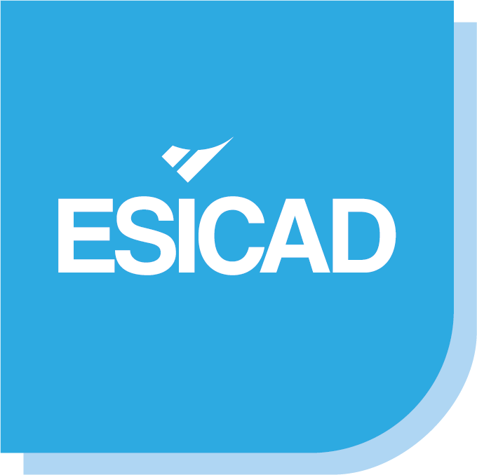
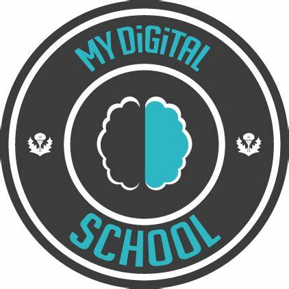
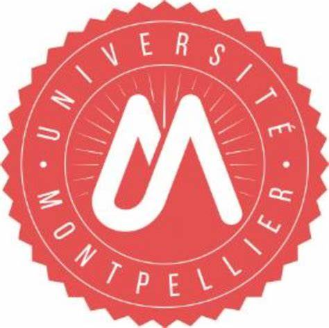

Cursus
En reconversion professionnelle, j'ai obtenu mon baccalauréat en passant un DAEU B option scientifique à l'IUT en 2023/2024.
Cela m'a permis d'intégrer le BTS SIO que je poursuis actuellement depuis septembre 2024.
Formation :
- Bachelor/Licence - Non défini (2026-2027)
- BTS SIO - Esicad & MydigitalSchool (2024-2026)  
- Baccalauréat Scientifique - IUT Montpellier (2023-2024) 
Expérience Professionnelle :
- Stagiaire technicien en informatique - Marie de Le Grau Du Roi (juin 2025)